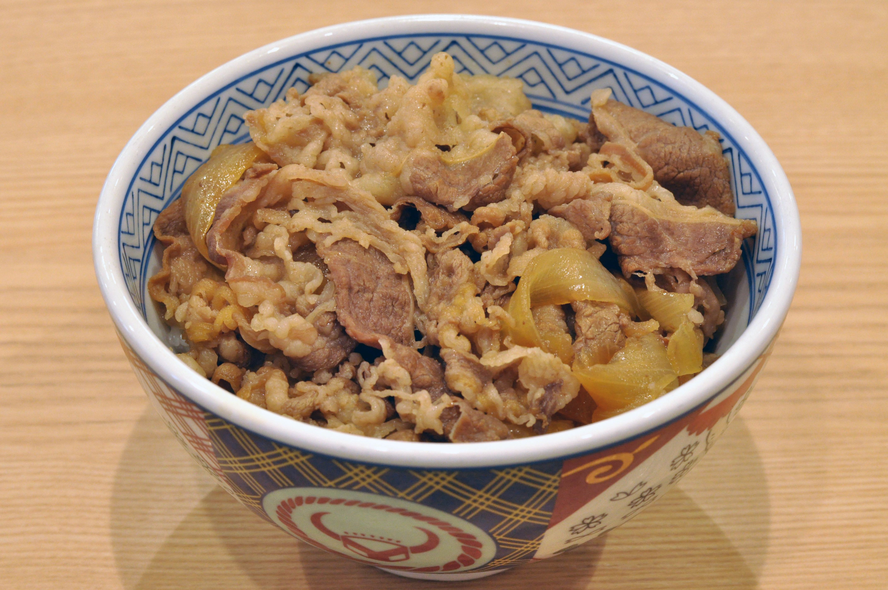

Gyudon

Description
Gyudon (牛丼) is classic comfort food that has had its place in Japanese cuisine for over 150 years. Not only is this hearty rice bowl extremely simple to put together, but it’s also famous for being a quick, nutritious meal that never fails to satisfy.
While every household in Japan makes gyudon a little different, the core ingredients remain the same: thin slices of beef, onion, and sweet and savory sauce served over steamed rice. Today, I’ll show you how I make this weeknight favorite at home.
Ingredients
- Thinly sliced beef: Either chuck or rib eye.
- Onion: Sliced onions give sweetness to the dish and are a perfect pair with tender beef.
- Sauce: The sauce is a complementary balance of sweet and savory, made with dashi (Japanese soup stock), sake, mirin, soy sauce, and sugar. So simple and highly effective in creating robust flavor!
- Garnish: green onions for the color and shichimi togarashi for a spicy kick.
Steps
- Cut the onion, green onions, and beef.
- Put the sauce ingredients, sliced onions, and beef in a large frying pan and start cooking.
- Serve the simmered beef and onion over steamed rice in large bowls.
Homepage